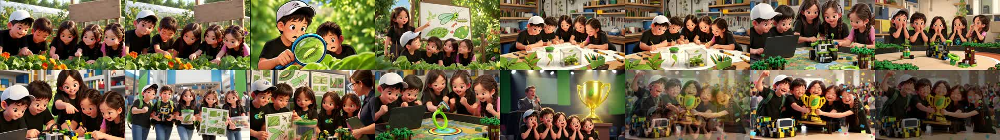
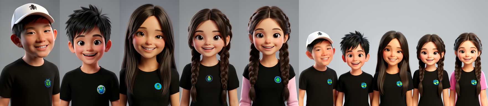
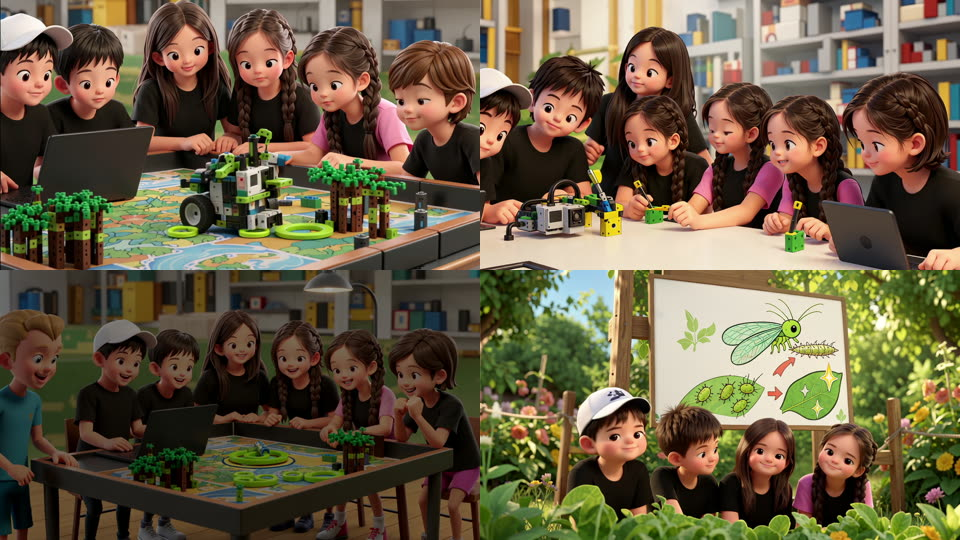

A 90-second, 16:9, 3D-animated film of Kevin's FIRST LEGO League team, made from a 3-page, 15-panel comic. The team discovers a tiny insect at the farm, studies it, builds it a habitat, tests the robot through failures, and wins the competition. It's the third film through the idea to video blueprint and the first with five recurring characters, all shown in group close-ups.
Delivered: projects/bot_builders_champion/v2-comic-cut/final/bot_builders_1920x1080.mp4 (63.5 s, 100 MB), bot_builders_3840x2160.mp4 master (308 MB), bot_builders_1280x720.mp4 preview (27 MB). Music from 0 s with a 2 s fade; mean −15.8 dB, peak −0.4 dB.


Short of the 90 s plan. The five-kid rule came first. In 7 of 12 clips LTX pulled the camera back after 3–6 s and invented extra children in the new margins, or a teammate walked out. Every such clip is cut before the first wrong frame, and there was no time left to re-render the tight shots wider. Nothing in the film has six kids.
| Shot | Take | Kept | Why it stops there |
|---|---|---|---|
| S1 farm | v1 | 6.8 s | end fade |
| S2 magnifier | v1 | 5.2 s | black edge bar, then a pull-back |
| S3 poster | v2 | 5.2 s | the standing girl drifts out after f130 (v1: 3.6 s) |
| S4 workbench | v1 | 8 s | end fade |
| S5 robot test | v1 | 4.8 s | pull-back, a 6th kid at f130; v2 was the same |
| S6 oops | v1 | 7 s | end fade |
| S7 adjust | v1 | 3.4 s | pull-back, 6th and 7th kids from f90; v2 worse |
| S8 hall | v1 | 5.2 s | end fade (framing held) |
| S9 judge | v1 | 6.4 s | camera slides right; teammates leave frame |
| S10 mission | v1 | 4.4 s | pull-back, extra girl ~f140 |
| S11 champions | v1 | 5.4 s | end fade |
| S12 trophy | v1 | 10 s | its fade is the film's ending |
15 LTX renders for 12 shots, 45 still candidates plus 5 targeted edits, 6 masters.

| Question | Answer |
|---|---|
| Project | separate from fll_farm; that film's no-faces rule stays with it |
| Faces | OK. All five families consent. Faces come from the comic; no photos |
| Extra kids | none. Exactly the five teammates in every frame. Background people are adults only (judge, announcer, blurred crowd). Any extra child is an automatic reject |
| Team | Kyle (white cap) and Lindsey (long straight hair) reuse their masters from kyle antarctic rescue plan and lindsey art plan, re-dressed. New masters for the second boy (spiky hair), braided girl A (black shirt) and braided girl B (pink sleeves) |
| Look | 3D animated, same as the other two films |
| Size | 16:9: 1024×576 render → 3840×2160 master plus 1920×1080 and 1280×720 copies. Five kids fit side by side (9:16 would cramp them) |
| Length | 90 s, 12 shots |
| Logos and text | removed. Black team shirts carry a small round blue-and-green bug emblem with no lettering; banners are plain; no brand logos |
| Group shots | full group close-ups (Kevin's choice over the safer mix of groups and pairs) |
| Music | "Victory", The_Mountain (Pixabay, 2:19) → raw/clips/music/victory_the_mountain.mp3. First 90 s: quiet for 45 s, then a steady climb to −10 dB by 90 s. 2 s fade out |
| Overnight | Claude judges at full size and restages a shot that keeps failing. Deliver the film plus this report, commit, push and notify |
| # | Keep | Panel | Shot | Kids |
|---|---|---|---|---|
| S1 | 8 s | 1 | farm: five kids lean over leaves and nasturtiums | 5 |
| S2 | 7 s | 2 | Kyle's magnifying glass on a tiny larva, the second boy amazed | 2 |
| S3 | 8 s | 3 | Lindsey points at a life-cycle poster, four watch | 5 |
| S4 | 8 s | 4+6 | workbench: sketches, the insect habitat jar | 5 |
| S5 | 8 s | 7 | robot testing on the competition field, laptop | 5 |
| S6 | 5 s | 8 | "oops": the robot tips over, five gasp | 5 |
| S7 | 7 s | 9 | girl B adjusts the robot, the others watch | 5 |
| S8 | 8 s | 10 | competition hall entrance, cheering (standing, not walking) | 5 + adults |
| S9 | 8 s | 11 | judging table, Lindsey presents to a judge | 5 + 1 |
| S10 | 7 s | 12 | the robot places the ring, fists clenched | 5 |
| S11 | 8 s | 14 | champions announced, hands on cheeks, glowing trophy | 5 + 1 |
| S12 | 10 s | 15 | hugging the trophy, confetti | 5 |
Dropped panels: 5 (the "let's go" cheer duplicates S12), 6 (folded into S4), 13 (hands-in huddle; a pile of hands is the Lindsey S3 failure mode).
masters/team.png): a collage of the five masters in comic order, edited into one waist-up group portrait (seed 1; exactly five, faces kept). It's the left half of every diptych, so all five identities ride in one reference.fll_farm v1.The run-spec is projects.json → fll_bot_builders["run-spec"]: every shot is a diptych with the team master, at 1024×576.
scripts/film_run.py fll_bot_builders stills # 36 candidates
scripts/film_run.py fll_bot_builders pick sN K # judge, full size, count kids
scripts/film_run.py fll_bot_builders clips
scripts/film_run.py fll_bot_builders qc # judge sets take + trim
scripts/film_run.py fll_bot_builders finish
Estimate: stills ~40 min, clips 12 × 9.5 min plus redos ~2.5 h, upscale ~1.8 h. About 5–5.5 h in total.